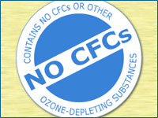

Just as it shapes your personal decision-making, scientific knowledge also helps inform regulatory decision-making and policy — and the results of these decisions are everywhere. In fact, they are so ubiquitous that you probably never even stop to think about them. Why is your quart of milk decorated with a nutrition label? Why do schools check students' vaccination records? Why aren't your new kitchen tiles made of asbestos? Why is it illegal to pour your used motor oil down a storm drain? Because of science, of course. Science informs policies that promote our health, safety, and environmental stewardship.
Science doesn't dictate policy, but it does give us a "how-to" manual for reaching the outcomes that we decide we want. For example:
- Want to get rid of polio? In the 1940s and 50s, American society got behind efforts to prevent and treat polio by donating to the organization called the March of Dimes. Through the March of Dimes, that societal concern financed research on polio vaccines. Science provided us with the vaccine that made prevention possible, and it also gave us an understanding of polio transmission that shaped our approach to administering the vaccine. If we wanted to truly eradicate the disease, only a massive vaccination effort would do the trick. Today, a polio vaccination is a routine requirement for enrolling in public school in the U.S. In 1988, a set of international health organizations launched a global eradication program based on widespread vaccination — and the battle continues. As of January 2007, polio had been beaten back to just four countries.
A child in India is given an oral polio vaccine. - Want to get warning of natural disasters? Though we can't yet predict earthquakes, science does have effective ways of predicting when and where hurricanes might strike land. Society has put that knowledge to good use. The National Weather Service continually collects data about meteorological patterns and analyzes those data based on our scientific understanding of weather systems. They may then issue a hurricane warning, which gives citizens time to get to safety and allows community organizers to prepare for evacuations and emergencies.
A satellite image of Hurricane Emily approaching Mexico. - Want to repair our ozone layer? The ozone layer shields us from damaging ultraviolet rays, but in 1985, we discovered a chink in that armor — a hole in the ozone layer over Antarctica. If things went unchecked, science predicted dire outcomes: possible increases in DNA damage and skin cancer rates, along with unpredictable changes in the global food web caused by die-off of UV-sensitive plankton. Luckily, science was also ready with an explanation and a potential solution. The culprit seemed to be chlorofluorocarbons (CFCs), human-made chemicals used for air conditioning and aerosol propellants, which, chemists showed, could destroy ozone molecules. Society took science to heart, and in 1990, policy makers from 93 countries gathered in London to sign a treaty, agreeing to phase-out CFCs by 2000.
Science doesn't tell us that we ought to prevent disease, provide advanced warning in case of disaster, or protect our planet. People make those decisions based on their own values, but once a decision is made, we can use scientific knowledge to figure out how to accomplish that goal and what its likely ramifications will be.